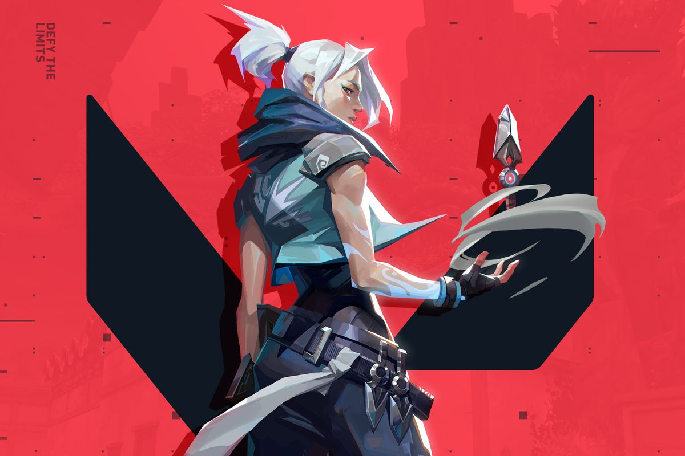

Valorant Review  Mengenal Valorant, Game FPS yang Tengah Hype Among Us Review Game Co-op yang melibatkan kita mencari penghianat diantara pemain Pembelajaran Query SQL Pelajari dasar-dasar dan contoh query SQL untuk mengelola basis data.